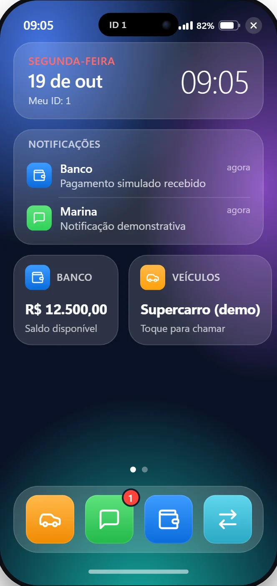

Custom FiveM resources
Server and client Lua for the feature your server is missing, with validation, clean failure handling and configuration you can change.
Seen in: DevLab Character, DevLab Core.
Request thisAtson Melo — FiveM Developer
We build custom Lua resources, modern NUI interfaces and integrations for FiveM servers, focused on stability, performance and maintainability.
LuaJavaScriptNUIAutomated tests

Screenshot: DevLab Phone NUI in headless Chromium with a simulated FiveM bridge — not an in-game capture. All figures and names are demo data. Try the interactive demo ↓
Services
Four clear offers. Scope, deliverables and limits are agreed in writing before development starts.
Server and client Lua for the feature your server is missing, with validation, clean failure handling and configuration you can change.
Seen in: DevLab Character, DevLab Core.
Request thisModern, responsive in-game interfaces in HTML, CSS and JavaScript, keyboard friendly, wired to Lua through a defined contract.
Seen in: DevLab Phone (try the demo).
Request thisConnect resources, UI and server logic safely: versioned messages, input validation, rate limiting, idempotent requests and structured logs.
Seen in: the phone’s RPC pipeline and the core’s validated messaging.
Request thisEvidence-first diagnosis: reproduce, prove the cause, apply the smallest fix and add a regression test. Ongoing maintenance on request.
Seen in: Qbox PR #780 (bounded waits in vehicle spawning).
Request thisProjects
DEVLAB is a working lab. Each card says what is done, what is still in progress and how it was verified. Source is private; details are available on request.
A custom in-game phone: NUI interface (HTML/CSS/JS) wired to Lua through a validated RPC pipeline. Home, garage, messages and a simulated bank with PIX flow.
Character appearance management: validated presets, in-game calibration tools and per-player saved choices, restricted to authorized players.
A framework-independent reference resource: validated client↔server messaging, per-player rate limiting and structured JSON logs. Its patterns are reused by the other DEVLAB resources.
Upstream fix for unbounded waits in qbx.spawnVehicle, with a reproduction harness. Linked, verifiable and still under maintainer review.
Interactive demo
This runs the real phone interface code with a small in-browser stand-in for FiveM. Open apps, send a message, make a simulated PIX payment, call a vehicle.
SIMULATION · fictitious data
Evidence
These are dated snapshots checked by hand before publishing, not a live feed. Every figure comes from a command or a public page you can recognize.
Test totals are offline or simulated; in-game verification is listed per project as pending. The commit sits on a working branch of a private repository. Automatic CI-backed badges are a possible future step, not in place today.
Specialties
Listed by what the projects above actually use. No self-assigned percentages.
How we work
We define the problem, your server setup (framework, versions) and what “done” means.
A written scope with deliverables and limits, so there are no surprises.
Versioned in Git, in small reviewable commits.
Automated tests plus in-game checks, reported honestly, including what could not be verified.
Clean hand-over with documentation and install notes.
Contact
Describe what your server needs. The form prepares a clear brief that you send through any available channel.